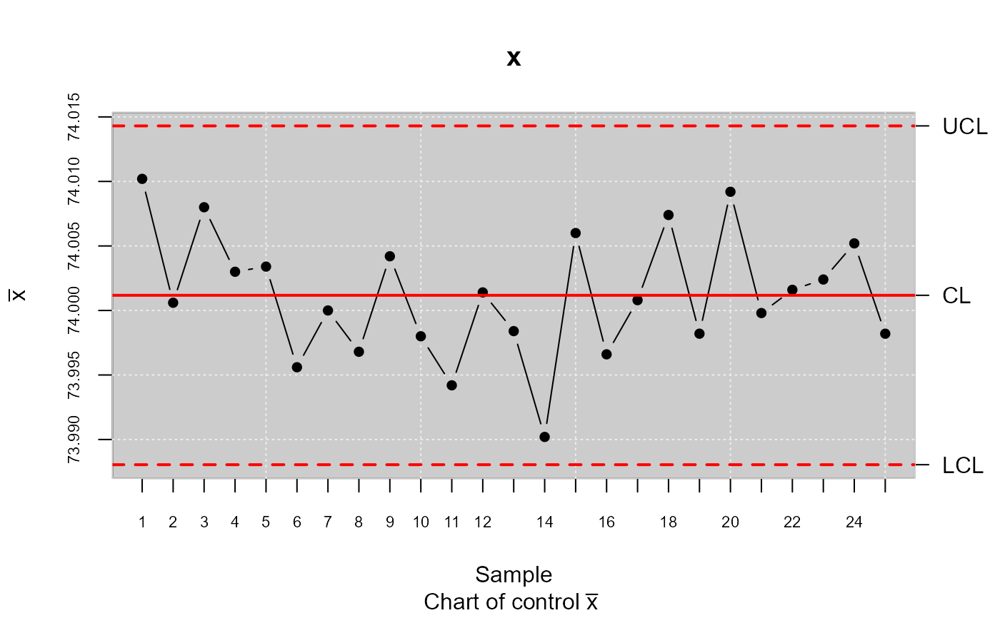

Calculates \(CNp\), \(CNpm\) using the formulation described by Tong and Chen (1998).
Arguments
- object
qcs object of type
"qcs.xbar"or"qcs.one".- parameters
A vector specifying the
uandvparameters values. Ifparameters= c(u=0, v=0), the CNp indice is calculed; Ifparameters= c(u=1, v=0), the CNpk indice is calculed; Ifparameters= c(u=0, v=1), the CNpm indice is calculed; Ifparameters= c(u=1, v=1), the CNpmk indice is calculed.- limits
A vector specifying the lower and upper specification limits.
- q
A vector specifying the lower and upper quantiles. These values are necessary, if
objectvalue is missing.- target
A value specifying the target of the process. If it is
NULL, the target is set at the middle value between specification limits.- median
A value specifying the median of data.
- nsigmas
A numeric value specifying the number of sigmas to use.
- confidence
A numeric value between 0 and 1 specifying the probabilities for computing the quantiles. This values is used only when
objectvalues is provided. By defaultconfidence=0.9973.
References
Montgomery, D.C. (1991) Introduction to Statistical Quality Control, 2nd
ed, New York, John Wiley & Sons.
Tong, L.I. and Chen, J.P. (1998), Lower confidence limits of process capability
indices for nonnormal process distributions. International Journal of Quality & Reliability Management,
Vol. 15 No. 8/9, pp. 907-19.
Examples
library(qcr)
##' data(pistonrings)
xbar <- qcs.xbar(pistonrings[1:125,],plot = TRUE)

x<-xbar$statistics[[1]]
LSL=73.99; USL=74.01
median <-median(x)
lq=as.numeric(quantile(x,probs=0.00135))
uq=as.numeric(quantile(x,probs=0.99865))
qcs.cpn(parameters = c(0,0),limits = c(LSL,USL),
median = median, q=c(lq,uq))
#> CNp
#> 1.0082
qcs.cpn(object = xbar,parameters = c(0,0), limits = c(LSL,USL))
#> CNp
#> 1.0082
qcs.cpn(object = xbar,parameters = c(1,0), limits = c(LSL,USL))
#> CNpk
#> 0.9275
qcs.cpn(object = xbar,parameters = c(0,1), limits = c(LSL,USL))
#> CNpm
#> 0.9799
qcs.cpn(object = xbar,parameters = c(1,1), limits = c(LSL,USL))
#> CNpmk
#> 0.9015